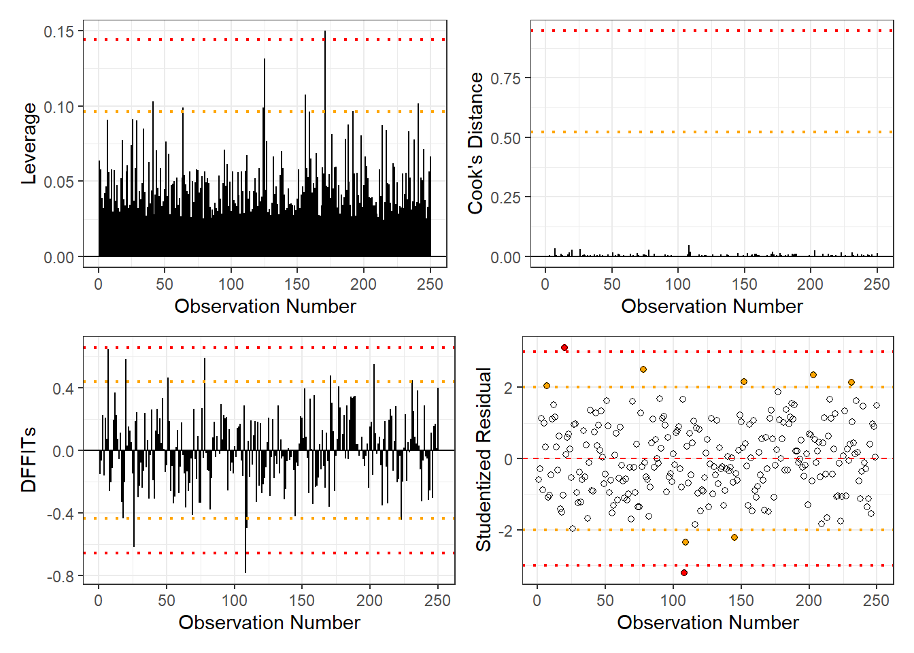
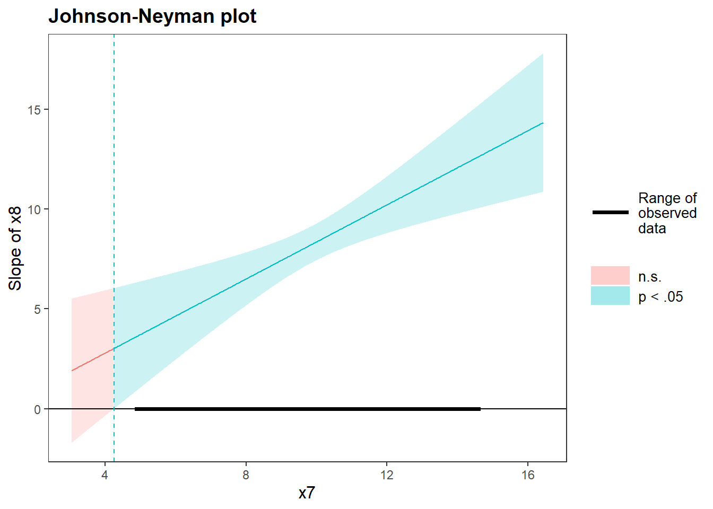
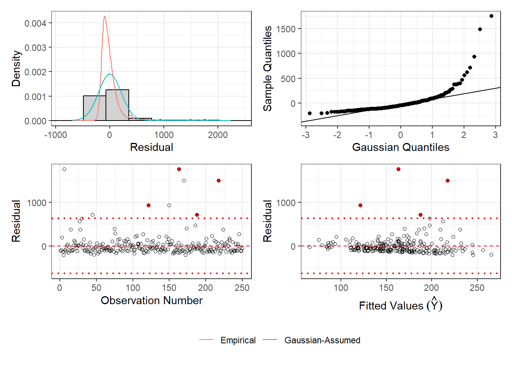
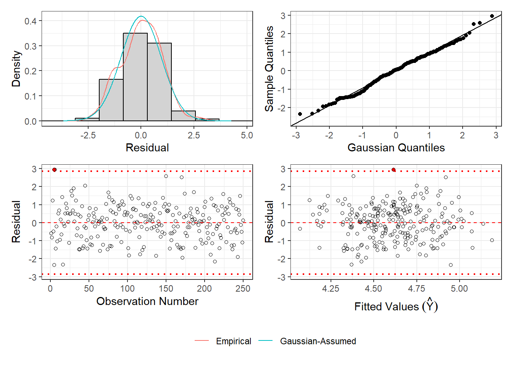

Open Science Collaboration (2015) attempted to replicate 100 psychology experiments from three journals:
Journal of Personality and Social Psychology (JPSP)
Journal of Experimental Psychology: Learning, Memory, and Cognition (JEP: LMC).
Psychological Science (PSCI)
Journal
Replicated
Not Replicated
JPSP
7
24
JEP:LMC
13
14
PSCI
15
24
Their work astonishingly showed that, empirically, only just over half of their attempts were successful.
1.1 Part a
Overall, is there support for the claim that more than half of psychology research is able to be replicated?
Code
library(stats)library(pwr)library(binom)replicated =7+13+25not_replicated =24+14+24total = replicated + not_replicatedbinom.test(replicated, total, p =0.5, alternative ="greater")
Exact binomial test
data: replicated and total
number of successes = 45, number of trials = 107, p-value = 0.9593
alternative hypothesis: true probability of success is greater than 0.5
95 percent confidence interval:
0.339836 1.000000
sample estimates:
probability of success
0.4205607
Code
ES.h(0.5, replicated/total)
[1] 0.1595546
Code
binom.exact(replicated, total)
method x n mean lower upper
1 exact 45 107 0.4205607 0.325769 0.5198639
Based on an exact binomial test, there is not support for the claim that over half of psychology research is able to be replicated. We fail to reject our null hypothesis that \(p = 0.5\) (\(p\)-value = 0.9593). A 95% confidence interval for our proportion is [0.33, 0.52]. Our effect size, cohen’s h, is 0.160, indicating a small difference between our empirical proportion of 0.421 and our null proportion of 0.5.
1.2 Part b
Assess whether the replication success rate varies across journals.
Cramer's V (adj.) | 95% CI
--------------------------------
0.15 | [0.00, 1.00]
- One-sided CIs: upper bound fixed at [1.00].
Code
interpret_cramers_v(0.15)
[1] "small"
(Rules: funder2019)
Based on the results from a Chi-Squared test of independence, there is no evidence for a statistically discernible difference in replication rates by journal (\(\chi^2 = 4.250\), \(p = 0.119\)). The effect size is small (Cramer’s \(v = 0.15\)).
2 Question 2
Below, I simulate a rather quite annoying set of regression data.
Code
set.seed(0510)n <-250dat <-tibble(x1 =rnorm(n, mean =50, sd =10),x2 =factor(sample(c("A", "B"), n, replace =TRUE)),x3 =factor(sample(c("Control", "Treat"), n, replace =TRUE)),x4 =factor(sample(c("Low", "High"), n, replace =TRUE)),x5 =rnorm(n, mean =0, sd =1),x6 =factor(sample(c("Group1", "Group2"), n, replace =TRUE)),x7 =rnorm(n, mean =10, sd =2),x8 =rnorm(n, mean =10, sd =2)) |>mutate(y =5+# Intercept# Quantitative x12* x1 +# Categorical x2 (x2 =="B") *10+# Categorical x Categorical (x3*x4) (x3 =="Treat") *5+ (x4 =="High") *2+ (x3 =="Treat"& x4 =="High") *15+# Quantitative x Categorical (x5*x6)3* x5 + (x6 =="Group2") *4+ (x5 * (x6 =="Group2")) *8+# Quantitative x Quantitative (x7*x8)1.5* x7 +0.5* x8 +0.8* (x7 * x8) +# Errorrnorm(n, mean =0, sd =15))
A histogram of our linear model residuals shows that the residuals appear very normal and are centered around 0. The qq-plot of the residuals shows a very close fit between the Gaussian quantiles and sample quantiles. There are two residuals that are on the border of reasonability but that alone shouldn’t be much concern.
Code
source(file ="plotInfluence.R")plotInfluence(mod)

There is one observation with a high leverage, one point with a large negative DFFITs, and two observations with large positive or negative studentized residuals. Given that none of the observations have high Cook’s D values, only one observation is flagged in two metrics, and the total sample size is large, these metrics on the influence of outliers appear fairly standard to a true linear model.
2.3 Part c
Interpret the intercept, the coefficients on \(x_1\) and \(x_2\).
The intercept tells us that for a point with all numeric variables (\(x_1\), \(x_5\), \(x_7\), \(x_8\)) equalling 0, \(x_2 =\) “A”, \(x_3=\) “Control”, \(x_4 =\) “High”, and \(x_6 =\) “Group 1”, the model would predict a \(y\) value of 12.418.
The \(x_1\) coefficient tells us that for every unit increase in \(x_1\), we’d expect a \(y\) value increase of 2.135.
The \(x_2\) coefficient tells us that being in the “B” group is associated with a 10.029 increase in \(y\) compared to the “A” group.
2.4 Part d
Untangle and interpret the \(x_3*x_4\) interaction.
x3 = Control:
contrast estimate SE df t.ratio p.value
High - Low 3.52 2.53 238 1.391 0.1654
x3 = Treat:
contrast estimate SE df t.ratio p.value
High - Low 18.71 2.60 238 7.195 <.0001
Results are averaged over the levels of: x2, x6
If we view the effect of \(x_4\) across the levels of \(x_3\), we see that in the control group, having \(x_4=\) “High” was associated with a 3.52 greater value in \(y\) as compared to \(x_4\) “Low”, a difference not statistically discernible (\(p = 0.165\)). In the treat group, having \(x_4\) = “High” was associated with 18.71 greater value in \(y\) as compared to \(x_4=\) “Low”, a statistically discernible difference (\(p < 0.0001\)).
x4 = High:
contrast estimate SE df t.ratio p.value
Control - Treat -21.70 2.54 238 -8.543 <.0001
x4 = Low:
contrast estimate SE df t.ratio p.value
Control - Treat -6.51 2.66 238 -2.445 0.0152
Results are averaged over the levels of: x2, x6
If we view the effect of \(x_3\) across the levels of \(x_4\), we see that in the low group, having \(x_3\) = “Treat” was associated with 6.51 greater value in \(y\) as compared to \(x_3=\) “Control”, a statistically discernible difference (\(p = 0.015\)). In the high group, having \(x_3\)= “Treat” was associated with a 21.70 greater value in \(y\) as compared to \(x_3=\) “Control”, a statistically discernible difference (\(p <0.0001\)).
2.5 Part e
Untangle and interpret the \(x_5*x_6\) interaction.
mod.emt <-emtrends(mod, ~ x7, var ="x8", at =list(x7 =round(x7.vals,2)))pairs(mod.emt)
contrast estimate SE df t.ratio p.value
x78.38 - x710.22 -1.71 0.477 238 -3.581 0.0012
x78.38 - x712.06 -3.42 0.954 238 -3.581 0.0012
x710.22 - x712.06 -1.71 0.477 238 -3.581 0.0012
Results are averaged over the levels of: x2, x3, x4, x6
P value adjustment: tukey method for comparing a family of 3 estimates
Trends for \(x_8\) are discernibly different at low, average, and high (+/-1 SD) levels of \(x_7\), increasing by 1.71 at each level (all \(p\)-values = 0.0012).
Code
library(interactions)johnson_neyman(mod, pred = x8, modx = x7)
JOHNSON-NEYMAN INTERVAL
When x7 is OUTSIDE the interval [-9.96, 4.25], the slope of x8 is p < .05.
Note: The range of observed values of x7 is [4.89, 14.60]

A Johnson-Neyman plot shows us that the slope of \(x_8\) increases as \(x_7\) increases and is statistically discernible (\(p<0.05\)) for the range of observed data. For theoretical lower levels of \(x_7\) (<4.25), the slope of \(x_8\) would not be statistically discernible (\(p\geq 0.05\)).
2.7 Part g
Standardize the continuous data and refit the regression model. What do you notice about the coefficient estimates in relation to your answers to parts d-f?
Code
dat_scaled <- dat |>mutate(x1 =scale(x1), x5 =scale(x5), x7 =scale(x7), x8 =scale(x8), y =scale(y))mod_scaled <-lm(formula, dat_scaled)summary(mod_scaled)
Most of the \(p\)-values for the coefficients have stayed the same, but some, such as \(x_6\), \(x_7\), and \(x_8\), have changed. I’m not entirely sure why this.
3 Question 3
Below, I simulated data that have a non-linear relationship.
Code
set.seed(7272)n <-250dat <-tibble(x =rnorm(n, mean =1, sd =0.2)) |>mutate(y =exp(2.9+1.8*x +rnorm(n, mean =0, sd =1)))
3.1 Part a
Fit the model \(y_i = \beta_0 + \beta_1 x_{1i} + \epsilon_i\) and interpret the coefficient on \(x\).
Code
exp_mod <-lm(y ~ x, data = dat)summary(exp_mod)
Call:
lm(formula = y ~ x, data = dat)
Residuals:
Min 1Q Median 3Q Max
-209.57 -109.57 -46.30 39.57 1750.50
Coefficients:
Estimate Std. Error t value Pr(>|t|)
(Intercept) -26.45 66.85 -0.396 0.69269
x 190.28 65.99 2.883 0.00428 **
---
Signif. codes: 0 '***' 0.001 '**' 0.01 '*' 0.05 '.' 0.1 ' ' 1
Residual standard error: 209.6 on 248 degrees of freedom
Multiple R-squared: 0.03243, Adjusted R-squared: 0.02853
F-statistic: 8.313 on 1 and 248 DF, p-value: 0.004281
From an OLS model, we expect that for every unit increase in \(x\), \(y\) would increase by 190.28.
3.2 Part b
Conduct a residual analysis on the model in part a to demonstrate how to identify when you need a log transformation.
Code
plotResiduals(exp_mod)

The residual analysis gives us several clues as to why a log transform would be helpful in this situation: mainly, the residuals are heavily right skewed with a huge tail, and all of the large residuals are positive. Also, the qq-plot shows a predictable deviance from the standard gaussian quantiles at high sample quantiles.
3.3 Part c
Fit the model \(\log(y_i) = \beta_0 + \beta_1 x_{1i} + \epsilon_i\) and interpret the coefficient on \(x\).
Code
log_mod <-lm(log(y) ~ x, data = dat)summary(log_mod)
Call:
lm(formula = log(y) ~ x, data = dat)
Residuals:
Min 1Q Median 3Q Max
-2.35217 -0.61174 0.05022 0.67488 2.94090
Coefficients:
Estimate Std. Error t value Pr(>|t|)
(Intercept) 3.5528 0.3046 11.664 < 2e-16 ***
x 1.0654 0.3007 3.543 0.000472 ***
---
Signif. codes: 0 '***' 0.001 '**' 0.01 '*' 0.05 '.' 0.1 ' ' 1
Residual standard error: 0.9552 on 248 degrees of freedom
Multiple R-squared: 0.04818, Adjusted R-squared: 0.04434
F-statistic: 12.55 on 1 and 248 DF, p-value: 0.0004723
Based on this log transformed model, for every unit increase in \(x\), we’d expect a 1.0654 increase in log(\(y\)).
3.4 Part d
Conduct a residual analysis on the model in part c to demonstrate that the conditions for using regression are met.
Code
plotResiduals(log_mod)

The log transformed model fits the Gaussian distribution much better now,the histogram is centered around 0, and it fits the qqplot almost perfectly. There’s only residual that’s slightly large enough to be noticeable among the rest of the residuals, but that’s likely to happen with a sample size of 250.
3.5 Part e
Standardize \(x\) and fit the model \(\log(y_i) = \beta_0 + \beta_1 z_{1i} + \epsilon_i\) and interpret the coefficient on \(z\).
Code
scaled_dat <- dat |>mutate(x =scale(x))summary(lm(log(y) ~ x, data = dat))
Call:
lm(formula = log(y) ~ x, data = dat)
Residuals:
Min 1Q Median 3Q Max
-2.35217 -0.61174 0.05022 0.67488 2.94090
Coefficients:
Estimate Std. Error t value Pr(>|t|)
(Intercept) 3.5528 0.3046 11.664 < 2e-16 ***
x 1.0654 0.3007 3.543 0.000472 ***
---
Signif. codes: 0 '***' 0.001 '**' 0.01 '*' 0.05 '.' 0.1 ' ' 1
Residual standard error: 0.9552 on 248 degrees of freedom
Multiple R-squared: 0.04818, Adjusted R-squared: 0.04434
F-statistic: 12.55 on 1 and 248 DF, p-value: 0.0004723
The standardized and log transformed model shows us that for a standard deviation increase in \(x\), we’d expect a 1.0654 increase in log(\(y\)).
4 AI Disclosure
I used Claude AI throughout to help write code and generally to remember how to use EMM packages and functions. The conversation of everything used can be found here.
References
Open Science Collaboration. 2015. “Estimating the Reproducibility of Psychological Science.”Science 349 (6251): aac4716.